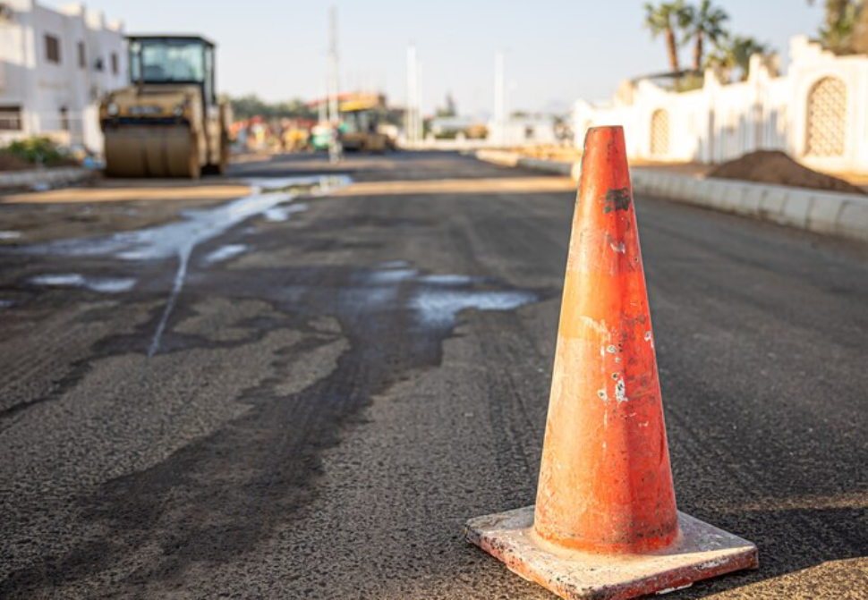
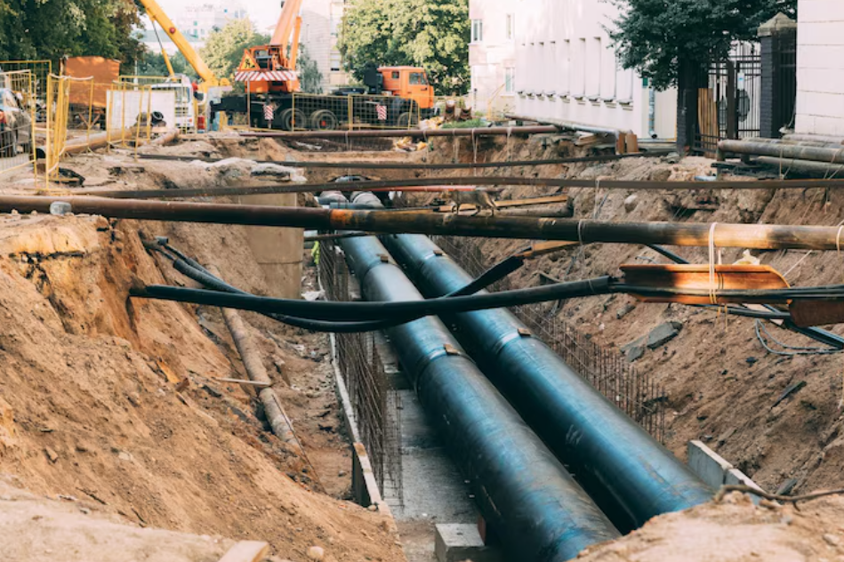
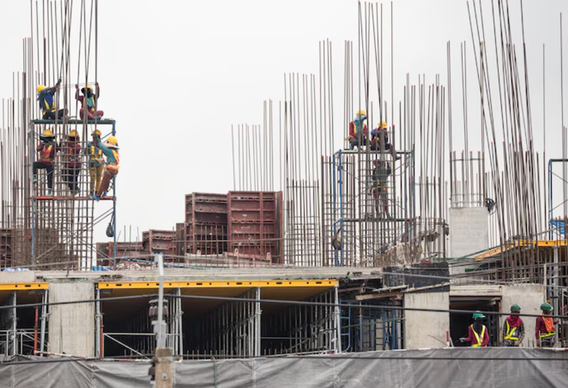
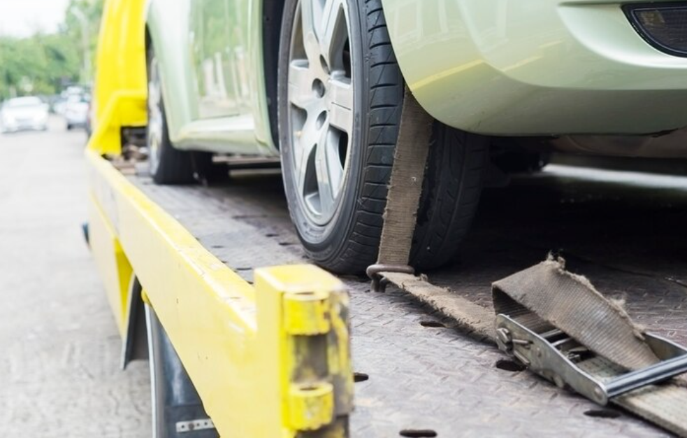
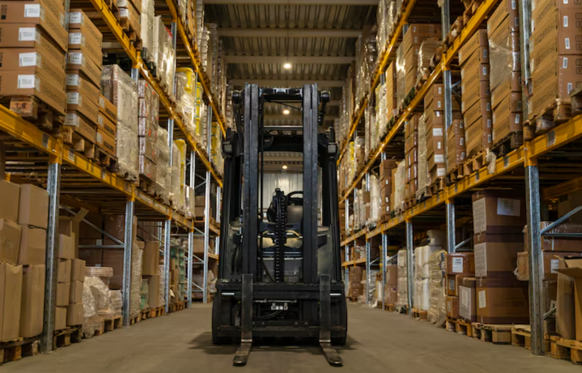
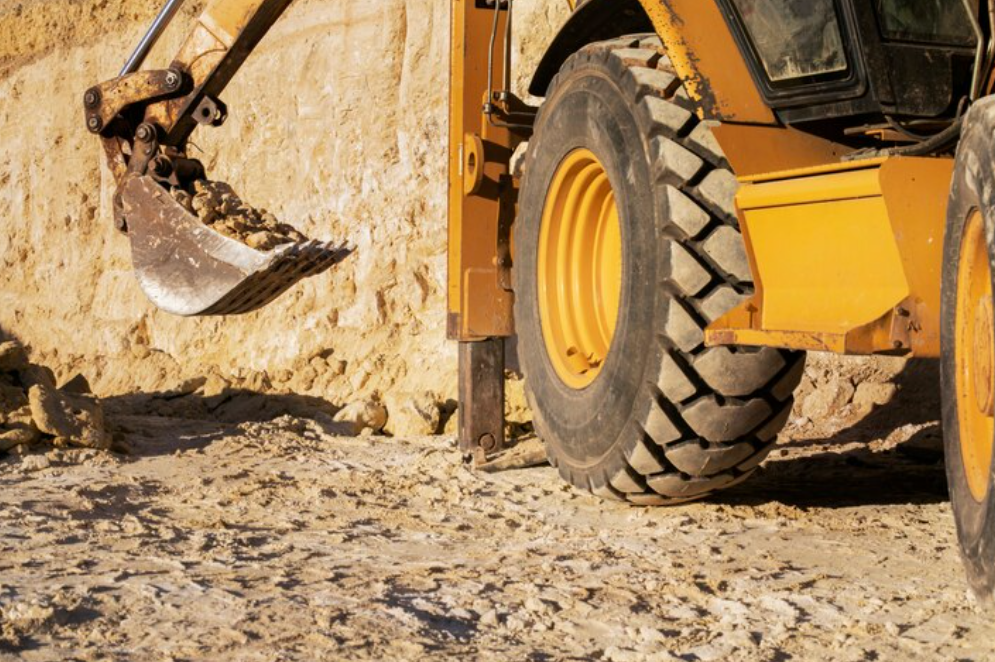

Mély- és magasépítés, szállítmányozás, valamint műszaki mentés terén megvalósított legfontosabb munkáink áttekintése.

Útépítés és felújítás
Egy nagy forgalmú, 3 km-es főút teljeskörű burkolatcseréje és kiszélesítése a forgalom zavarása nélkül.
Bővebben

Vízellátó rendszer kiépítése
Új, 1500 fős település ivóvíz-hálózatának teljes tervezése és kivitelezése, 8 km csővezetékkel.
Bővebben

Modern Társasház
Négyemeletes, 24 lakásos, 'A+' energetikai besorolású lakóépület kulcsrakész átadása.
Bővebben

Nehézgép Mentés
Különleges daruzási feladat egy 50 tonnás munkagép süllyedésének megoldására, szűk helyen.
Bővebben

Logisztikai Központ
12.000 m²-es acélszerkezetű raktár és irodaépület komplex kivitelezése 6 hónap alatt.
Bővebben

Híd Szerkezeti Felújítása
Egy századfordulós híd teherbíró képességének növelése, műemlékvédelmi szempontok figyelembevételével.
Bővebben